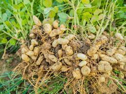

Kacang Tanah
Kacang Tanah (Arachis hypogaea) merupakan tumbuhan asli Amerika Selatan yang telah menjadi tanaman penting di seluruh dunia. Tanaman ini tumbuh sebagai semak kecil dengan daun menjari dan bunga kuning yang muncul di atas tanah. Yang unik, buah kacang tanah berkembang di bawah tanah, diambil dari kelopak bunga yang membesar dan mengebor ke dalam tanah. Kacang tanah kaya akan nutrisi, termasuk protein, lemak sehat, serat, dan sejumlah vitamin serta mineral. Selain itu, mereka mengandung antioksidan seperti resveratrol, yang dikenal memiliki manfaat kesehatan. Kacang tanah umumnya dikonsumsi sebagai makanan ringan atau diolah menjadi mentega kacang. Mereka juga digunakan dalam berbagai hidangan, termasuk saus kacang, salad, dan hidangan khas seperti gado-gado. Selain sebagai bahan makanan, kacang tanah memiliki peran penting sebagai tanaman pangan dan pakan ternak, ditanam luas di berbagai wilayah sebagai sumber protein nabati dan minyak. Meskipun tumbuh di Amerika Selatan, kacang tanah telah menyebar dan menjadi komoditas pertanian yang vital di berbagai negara, memberikan kontribusi pada ketahanan pangan dan ekonomi global.Klasifikasi Kacang tanah
Tanaman Kacang Tanah termasuk dalam genus Arachis hypogaea. Berikut adalah klasifikasi kacang tanah hingga tingkat spesies:
- Kingdom: Plantae (Tumbuhan)
- Divisi: Magnoliophyta (Tumbuhan Berbunga)
- Kelas: Magnoliopsida (Dicotyledon)
- Order: Fabales
- Familia: Fabaceae (Kacang-kacangan)
- Subfamili: Fabaceae (Kacang-kacangan)
- Suku: Fabaceae (Kacang-kacangan)
- Genus: Arachis
- Spesies: Arachis hypogaea
Dengan klasifikasi ini, kita dapat melihat bahwa kacang tanah termasuk dalam keluarga Fabaceae, yang juga dikenal sebagai keluarga kacang-kacangan. Kacang tanah dikelompokkan dalam genus Arachis dan memiliki nama spesifik hypogaea, menunjukkan bahwa buahnya berkembang di bawah tanah. Sistem klasifikasi ini membantu dalam mengidentifikasi dan memahami hubungan evolusi kacang tanah dengan tumbuhan lainnya.
Tips Perawatan
- Lokasi Penanaman: Pilih lokasi yang mendapatkan sinar matahari penuh, karena kacang tanah membutuhkan cahaya matahari yang cukup.
- Persiapan Tanah: Sebelum menanam, pastikan tanah subur dengan memberikan pupuk organik untuk meningkatkan kandungan nutrisinya.
- Penyemaian Benih: Rendam biji kacang tanah dalam air selama beberapa jam untuk mempercepat perkecambahan, lalu tanam dengan kedalaman sekitar 5-7 cm di dalam tanah.
- Irigasi yang Konsisten: Berikan irigasi yang konsisten selama musim tanam, terutama saat bunga berkembang dan buah mulai terbentuk.
- Pengendalian Hama dan Penyakit: Awasi tanaman untuk tanda-tanda hama seperti kutu dan ulat, serta penyakit seperti penyakit daun atau busuk pangkal batang.